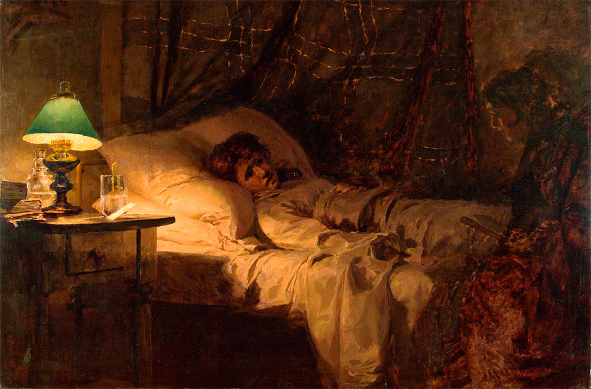

Retardation

Retardation (or narrative deceleration) in Anna Karenina is a narrative device by which Tolstoy slows the pace of the story, dwelling on descriptions of a moment and a protagonist's inner state while the plot hardly progresses. This device allows the reader to experience the same intensity or restlessness as the protagonists, often building suspense and making upcoming catastrophes more impactful.
In Part 2, Chapter 25, we experience the steeplechase through Vronsky's perspective. Tolstoy builds suspense in this chapter by vividly describing Vronsky’s sensory and emotional experience throughout the race. For instance, the narration is often dominated by descriptions of Frou-Frou's movements, the presence of spectators cheering the racers on, and the threatening sight of Gladiator: “Vronsky could feel those eyes fastened upon him from all sides, but he saw nothing except the ears and neck of his horse, the ground racing to meet him, and Gladiator’s croup and white legs beating time rapidly in front of him…” (Tolstoy 201). The connection Vronsky feels between himself and Frou-Frou is also illustrated throughout this passage, which often lingers on how “his excitement, his joy, and his affection for Frou-Frou kept mounting,” how “both he and his horse had experienced a joint moment of doubt,” and how he could tell Frou-Frou was exhausted by the “beads of sweat [that] had appeared on her mane, her head, and her pointed ears…” (Tolstoy 202). Ultimately, this leads to an impactful conclusion to the race when Vronsky lands on the saddle inappropriately, which breaks the beloved Frou-Frou’s back, and drives both to the ground. In Part 5, readers experience Nikolai’s deterioration and death from Konstantin’s perspective. For Tolstoy, dying was an extremely important experience to represent in the novel, given its impact on the dying person and those around them. These passages, in particular, create a shared sense of restlessness between the characters and the readers, as both feel the stagnation of Nikolai’s condition. Tolstoy often references time passing without Nikolai’s condition changing, like when Konstantin wakes up and “instead of receiving news of his brother’s death, which he was expecting, he learned that the sick man had returned to his earlier condition,” or how “dawn broke; the sick man’s condition was unchanged,” and how “three more agonizing days went by; the sick man was still in the same condition” (Tolstoy 504-505). The stagnancy of the dying man’s state is also facilitated by Tolstoy’s focus on Konstantin’s feelings towards death and the stillness that it provokes in him. Tolstoy contrasts the active mobilization of Kitty and Marya with Konstantin’s stillness to emphasize that “Levin and others…although they could say a lot about death, clearly did not know, because they were afraid of death and did not have the faintest idea what to do when people were dying” (Tolstoy 499). It is important to note that Konstantin’s attitude towards Marya changes over the course of his stay with Nikolai. Initially, “the mere thought of his wife, his Kitty, being in the same room as a whore made him shudder with disgust and horror” (Tolstoy 491). Still, he later realized that “however different those two women were…” they shared the admirable quality of knowing how to deal with a dying person (Tolstoy 498). Tolstoy thereby emphasizes how death can facilitate people growing closer together. Ultimately, Nikolai’s death produces many contradictory feelings in the reader, as it does in the characters, who both expected the death to come much sooner than it did, at some point desired it to occur, and then, once it does, feel the gravity of the loss. Overall, Tolstoy’s use of retardation in Anna Karenina helps readers understand the characters' experiences by facilitating a shared sense of stagnation in the pace of meaningful events and allowing readers to inhabit the protagonists' minds as they face an imminent catastrophe. Through this device, Tolstoy masterfully illustrates ever-so-slight changes or progressions in characters’ thoughts and feelings, making the build-up to key catastrophic moments in the novel, such as the deaths of Nikolai and Anna, all the more excruciating to us as readers. Notably, Tolstoy often uses this device before the death of a protagonist, as formerly mentioned, which suggests that part of Tolstoy’s endeavor while writing the novel was to depict the experience of imminent death — how it changed those whom it sought, how it changed those around them, and the questions that arose from it.